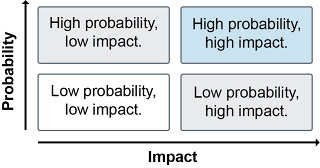
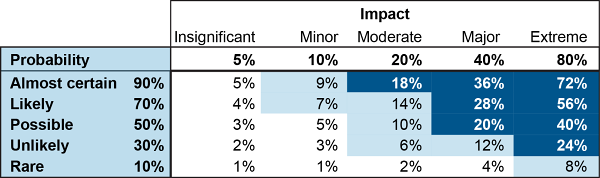
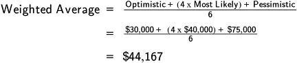

Sustainability guidelines and standards provide guidance on how to become sustainable so that responses can be complete and well thought out. Sustainability standards that focus on reporting help the organization show it is transparent and help market its sustainability successes. These subjects are first introduced.
Sustainability guidelines and standards include the following:
ISO quality and environmental standards (ISO 9000 and ISO 14000)
Social accountability and safety standards (ISO 26000, SA8000, ANSI Z.10)
Guidelines are broad, principle-based best practices that lack the authority of a standard and may not provide much information on how to implement them.
Standards are best practices developed by the consensus of numerous practitioners and experts in a given profession—or in multiple professions for those standards with more general applicability, such as quality standards. They carry more authoritative weight than recommendations and provide more information on how to implement them. Internationally recognized standards are of special relevance to global supply chains and multinational organizations. Some standards enable organizational certification to the standard, and becoming certified may require review and acceptance by an accredited third-party testing organization.
📖 ASCM Definition — accreditation:
📖 ASCM Definition — certification:
The organization does not need to be audited by an accredited third-party organization when it seeks to conform to a standard that has no certification requirement or if it does not desire to be certified. Using accredited third parties provides an independent confirmation of the third party's competence and enables others to rely on their work. When standards are internal or do not require certification, another option is for a supplier to invite its customers to audit the organization's systems for themselves. This is called a second-party assessment. A third option is to accept a supplier's "declaration of conformity to [specific standard]," which would be attested to by legally binding signatures and based on an internal audit (first-party) or a second- or third-party audit.
This following standards and related certification processes are important to supply chain management:
ANSI Z.10 Occupational Health and Safety Management Systems certification
International guidelines include the United Nations Global Compact and the OECD Guidelines for Multinational Enterprises.
The United Nations created the Global Compact as a means of helping businesses voluntarily align their operations and strategies with the ten key principles shown in Exhibit 8-13.

Source: UN Global Compact. Used with permission.
With the increasing speed of globalization, the United Nations Global Compact can help ensure that markets, commerce, technology, and finance advance in ways that benefit economies and societies everywhere. Many companies, especially those in lesser-developed regions of the world, recognize the need to collaborate and partner with governments, civil society, labor, and the United Nations. The idea is to leverage the moral authority and convening power of the UN and the resources and solution-finding abilities of organizations. This is accomplished through local Global Compact networks that root these principles into national and cultural contexts by fostering a continuing dialogue between businesses and stakeholders and by focusing on specialized areas of concern such as climate change or women's or children's rights. With nearly 18,000 corporate participants and other stakeholders from multiple countries, the Global Compact is the largest voluntary corporate responsibility initiative in the world and the primary entry point for organizations into the UN system.
The Global Compact has two complementary objectives:
The UNGC recommends that organizations evaluate their sustainability efforts using the Global Reporting Initiative's (GRI's) Sustainability Reporting Guidelines. In 2010, the UNGC signed an agreement with the GRI to adopt the GRI Guidelines as the recommended reporting framework for sustainability reporting. The GRI in turn adopted the UNGC's ten principles into its latest reporting guidelines.
📖 ASCM Definition — OECD guidelines:
(A multinational enterprise is an organization that owns or controls production or services facilities in one or more countries other than its home country. Multinational enterprises have been evolving and include a broad range of organizational structures and business arrangements. The close relations and alliances they have formed with their suppliers and contractors have blurred their boundaries.)
Established in 1961, OECD was created to promote policies that will improve the economic and social well-being of people around the world. It provides a forum in which governments can work together to share experiences and seek solutions to common problems and identify factors that drive economic, social, and environmental change. OECD measures productivity, investment, and global flows of trade. It establishes international standards ranging from agriculture, to taxes, to the safety of chemicals. The OECD is located in Paris, France, and has 38 member countries.
The goal of the OECD Guidelines is threefold:
Sustainability reporting has emerged as an important tool within an overall supply chain management strategy. According to the ASCM Supply Chain Dictionary, the Global Reporting Initiative (GRI) is "a network-based organization that pioneered the world's most widely used sustainability reporting framework." The GRI is committed to the framework's continuous improvement and application worldwide. In order to ensure the highest degree of technical quality, credibility, and relevance, the reporting framework was developed through a consensus-seeking process with participants drawn globally from business, civil society, labor, and professional institutions. The GRI also has strategic partnerships with the United Nations, the UNGC, ISO, and the Organization for Economic Co-operation and Development. In effect, the GRI is helping businesses develop sustainability and reverse logistics key performance indicators to assess and improve their environmental performance. This form of self-regulation may reduce the need for new laws and regulations.
📖 ASCM Definition — the Global Reporting Initiative (GRI) Reporting Framework:
The framework lays out the principles and indicators that organizations can use to measure and report their economic, environmental, and social performance. The cornerstone of the framework is the Sustainability Reporting Standards.
The GRI's Sustainability Reporting Standards transitioned from guidelines to being standards with a 2018 effective date. More topic-specific standards have been released since then. The aim is to help reporters prepare sustainability reports that provide reliable, relevant, and standardized information.

As shown in Exhibit 8-14, the set of standards is made up of three universally applicable standards and a large set of topic-specific standards that are organized into three series.
Universally applicable standards include GRI 1, 2, and 3. GRI 1, "Foundation," sets out reporting principles that are the criteria to be used to guide your choices to achieve effective GRI reporting. GRI 2, "General Disclosures," are the questions you answer in your report. This is the "what to report" part of the standard. GRI 3, "Management Approach," is the "how to report" part of the standard. It addresses how to manage the topically applicable standards. It contains explanations of how to apply the Reporting Principles, how to prepare the information to be disclosed, and how to interpret the Guideline concepts. It helps management to provide a narrative explanation of why a given topic is material (important enough to report on), describe the impact area boundaries (i.e., scope), and management approach to addressing the impact areas. It also focuses on the gathering of the data in order to create a report that contains useful and comparable information.
Topically applicable standards come in three series—GRI 200, "Economic," GRI 300, "Environmental," and GRI 400, "Social."
The consolidated set of standards also includes a GRI Standards Glossary.
The GRI Reporting Standards are an internationally recognized reporting format that can be used for any other organization's or government's requirements for reporting on economic, environmental, and social impacts. Another purpose is for voluntary sustainability reporting among supply chain members to manage sustainability risks and optimize supplier performance in order to
Improve the flow of reliable sustainability information from supplier to buyer.
Suppliers can proactively communicate their efforts, performance, and goals through a GRI sustainability report, enabling continuous improvement and closer engagement with buyers. Companies in business or industry associations can improve their sustainability performance, fostering a more stable and profitable climate for local and sectoral business groups.
GRI 101 includes 10 principles classified into two categories:
Stakeholder Inclusiveness: Identify stakeholders and responses to their reasonable expectations and interests.
Sustainability Context: Relate performance in the wider context of sustainability.
Materiality: Include aspects that are significant or would influence stakeholders' assessments and decisions.
Completeness: Report on all aspects with significant impact so stakeholders can reasonably assess the period's performance.
Accuracy: Use enough accuracy and detail for a fair assessment.
Balance: Include both positives and negatives to be unbiased.
Clarity: Make information understandable and accessible.
Comparability: Use consistent methods to allow analysis of trends and competitive benchmarks.
Reliability: Reporting methods and processes should be subject to examination of quality and materiality.
Timeliness. Report on a regular schedule so stakeholders can make informed decisions.
Adhering to the above reporting principles is the cornerstone of report transparency, so all organizations preparing reports should abide by them. To enable your sustainability report to claim to be prepared "in accordance" with the GRI standards:
There are two options for "in accordance" reporting: a core option and a comprehensive option. The core option has just the essential information, and the comprehensive option has some additional disclosures regarding organizational strategy and analysis, governance, ethics, and integrity. These and some additional core information about the company are part of what is called standard disclosures. The comprehensive option also needs more extensive performance information because each material aspect requires information about all related indicators. (The core option requires reporting only on at least one indicator per material aspect.)
Often companies are unsure what metrics to use to calculate the impacts they are having on specific topics, both to determine materiality and to determine how they are changing impact over time. Companies can begin by using the performance indicators developed by the Global Reporting Initiative or employ criteria from the Dow Jones Sustainability Index and the Carbon Disclosure Act. The UN Global Compact recommends that impacts should be calculated at both the enterprise level and the product level on a regular basis.
Ideally, over time an organization will strive to identify its impacts that span multiple topics.
Ideally, over time an organization will strive to identify its impacts that span multiple topics. A review of the boundaries can help show areas of overlap. For instance, by creating a new manufacturing facility that would provide stable employment for local residents, a company may inadvertently impact the local water supply it uses to cool its equipment.
Based on the organization's assessment of risks, opportunities, and impacts, the company develops metrics and goals specific to the organization and then creates a road map to execute its sustainability program.
Exhibit 8-15 lists the topics in each GRI standard series. An organization's sustainability report presents information relating to just those topics deemed to be material. Summaries of each standard follow by topic area.

Source: Global Sustainability Standards Board (GSSB), "Consolidated Set of GRI Sustainability Reporting Standards 2020."
Economic sustainability refers to how the organization impacts the economic picture for stakeholders at local, national, and global levels.
Economic performance reports organizational revenues, costs and expenses, payments to owners and taxes, and community investments. It also assesses organizational risks from climate change, if the organization has pension obligations, and if it receives government assistance or tax advantages.
Market presence discusses wages compared to minimum wage by gender and use of local senior management talent.
Indirect economic impacts is about community reinvestment and positive and negative impact on local or other economies.
Procurement practices discusses use of local suppliers.
Anti-corruption is about corruption risk assessments, employee training, incidents, and responses.
Anti-competitive behavior is about legal actions and outcomes regarding restraint of free trade.
Tax is about approach to taxation; governance, risk management, and control of tax; and stakeholder engagement.
Environmental sustainability reports on the organization's impact on ecosystems, land, air, and water from its inputs, including energy and water, and its outputs, including emissions, effluents, and waste.
Materials describes the type and amount of materials used and how much is from recycled sources.
Energy relates to internal and external energy use, intensity of use, and reduction efforts both at the organization and in product energy requirements.
Water and effluents is about water as a shared resource, water withdrawal, discharge and impacts, and consumption.
Biodiversity relates to proximity to and impact on protected areas or endangered species and protection or restoration efforts.
Emissions discusses greenhouse gases.
Waste is about waste generation and impact, impact management, waste generated, and waste directed to/diverted from disposal.
Environmental compliance refers to sanctions and fines paid.
Supplier environmental assessment is about supplier environmental screening and event reporting.
The social series of standards reflects the impact the organization has on social systems, including labor law, human rights, health, safety, privacy, and socioeconomics. The bases for many of these social standards include the UN Universal Declaration of Human Rights, the UN Declaration on the Right to Development, a UN declaration related to indigenous peoples' rights, and UN conventions on civil and political rights and economic, social and cultural rights. Some UN International Labour Organization (ILO) conventions are drawn upon, including those on forced labor and child labor. The standards also use a number of national charters that protect human rights.
Employment is about new hires, turnover, benefits for full-time versus part-time employees, and parental leave.
Labor/management relations is about minimum notice periods for operational changes.
Occupational health and safety is about having a system, identifying hazards and their risk, occupational health services, worker participation and training, promotion of worker health, prevention, workers who are covered, injuries, and ill health.
Training and education is about average hours of training, training programs, and performance reviews.
Diversity and equal opportunity is about the diversity of employees and governance bodies and the ratio of pay between men and women.
Non-discrimination is about incidents and corrective actions.
Freedom of association and collective bargaining is about the level of support for rights of your or your suppliers' employees to collectively bargain or associate.
Child labor and forced or compulsory labor each identify risk of incidents and preventive measures.
Security practices is about training security personnel on human rights.
Rights of indigenous peoples addresses incidents and actions.
Human rights assessment is a summary aspect on human rights.
Local communities is about programs to engage, assess, and develop local communities as well as any negative impacts.
Supplier social assessment is about screening suppliers and violations and responses.
Public policy is about the size of political contributions and their recipients.
Customer health and safety is about known areas for improvement and regulatory and voluntary noncompliance issues and outcomes
Marketing and labeling discloses mandatory labeling requirements, noncompliance incidents, and customer satisfaction survey results, whether banned or disputed products are sold, and regulatory or voluntary noncompliance and outcomes related to advertising, promotion, or sponsorship.
Customer privacy is about substantiated breaches of privacy.
Socioeconomic compliance is about product fines and sanctions.
More information about the GRI and its Reporting Standards can be found in the online Resource Center.
The International Organization for Standardization (ISO) is a worldwide federation of the national standards institutes of 165 countries. It is a nongovernmental organization (NGO). ISO is a trusted partner in the global community for the development of globally relevant international standards. The current ISO portfolio includes more than 21,000 standards and other types of documents. Different certification processes and standards are available for many types of industries, ranging from agriculture and construction, through mechanical engineering and manufacturing and distribution, to transport, medical devices, food technology, environmental protection, oil and gas, ship building, and information and communication technologies. ISO also has standards for good management practices and for services.
Why is ISO important? Implementing international standards or guidelines or maintaining a certification can provide the following benefits to companies:
Provides governments around the globe with a technical base for health, safety, and environmental legislation and conformity assessment
Promotes best practices and the sharing of innovative technological advances and good management practices
The following are important key aspects of ISO:
Voluntary.
ISO standards are voluntary. As an NGO, ISO has no legal authority to enforce the standards' implementation. Conformance relative to ISO standards is an affirmative indication or judgment that a product or a service has met the requirements. However, some ISO standards (mainly those concerned with health, safety, or the environment) have been adopted by countries as part of their regulatory framework. In some cases, although ISO standards are voluntary, they may become a market requirement (e.g., ISO 9001 Quality Management Systems).
Market-driven.
ISO develops standards for which there is a market need. An international cross section of experts in the field (e.g., industrial, technical, and business sectors) who have asked for the standards and other parties with relevant knowledge (such as representatives of government agencies, consumer organizations, academia, and testing laboratories) collaborate as technical committees to develop the standards.
Consensus.
The fact that ISO standards are developed in response to market demand and are based on consensus among the interested parties ensures widespread applicability. Standards are reviewed at least every five years to decide whether they should be maintained, updated, or withdrawn. The review process ensures that the standards remain state of the art.
Registration.
Registration is the audit of an organization's implementation and conformance to ISO standards. It should be noted that the conformance to standards themselves does not contain any requirement for registration. Requirements for registration come from customers or governments. In some instances, registration is required by a customer or a government agency as a condition of doing business. Some companies also choose to seek registration to market capabilities.
Generic management system standards.
Many ISO standards are highly specific to a particular product, material, or process. However, ISO 9000 and ISO 14000 Series Standards are examples of "generic" standards, which means that the same standard can be applied to any organization, large or small, and any product or service, in any sector of activity. Such generic standards are applicable to business enterprises, government departments, or nongovernment public administration. ISO 9001 provides a set of requirements for implementing a quality management system; ISO 14001 provides generic requirements for an environmental management system.
ISO certification must be renewed every three years. When a new ISO version of a standard becomes available, certified organizations have a three-year period to make the transition. Because ISO certification has become so widespread, it has become an expected requirement in requests for proposal (RFPs)/invitations to tender (ITT).
Whether an organization achieves ISO registration or merely implements and maintains ISO compliance, the results will be of benefit in supply chain management.
ISO 9000 is a series of standards related to quality, which helps with sustainability by reducing scrap, defects, and returns.
📖 ASCM Definition — ISO 9000 Series Standards:
Note that ISO 9004: 2018 is the current version of this standard.
ISO 9001 specifies the requirements for a quality management system (QMS). To satisfy ISO 9001's requirements, the organization needs to demonstrate that it can consistently provide products and services that meet all applicable regulatory and statutory requirements while working to enhance customer satisfaction by applying the principles within ISO 9001 effectively. This includes continually improving the quality management system and being able to provide assurance that the products and services conform both to customer requirements and applicable regulatory and statutory requirements.
ISO 9001 is a framework for developing quality processes at an organization and designing quality into product design, research and development, production, implementation or installation, and service.
ISO 9001 focuses on customer requirements, top management commitment to quality, a process-centered approach, and continual improvement. It helps organizations achieve product consistency and high quality. For supply chain managers, ISO 9001-certified suppliers are more likely to be able to meet needs and expectations and to comply with all relevant regulations. Note that while ISO 9001 certification indicates conformity to the quality process, it is never a statement of product conformity. It relates to the ability to be consistent and high quality rather than to specific goods or services. For example, the product may meet stated requirements and all applicable regulations but not meet actual requirements.
Certification to ISO 9001 requires that organizations perform their own internal audits of their quality processes and procedures. Accredited organizations can optionally be used to audit the organization and grant ISO 9001 certification. Organizations that pass these audits can state that the relevant processes conform to ISO guidelines.
If a certified supplier appears to have ongoing quality issues, this should be escalated first through the supplier itself with appropriate feedback and then, if not resolved, brought up with the independent third-party certification body (registrar). If still not resolved, complaint can be made to the accreditation body (if the certification body is accredited).
ISO 14000 is a key method of providing assurance that the organization is living up to its environmental commitments.
📖 ASCM Definition — ISO 14000 Series Standards:
The standards help companies to minimize harmful effects on the environment due to their activities and to continually improve environmental performance. Originally developed as an outcome of the 1992 Rio Summit on the environment, these standards provide a framework for a company to develop an environmental management system as well as an audit program. An environmental management system (EMS) enables an organization to
Identify and control the impact of its activities, products, and services
Develop a systematic method for establishing environmental objectives and targets as well as measures of its ability to achieve them.
The ISO 14000 family of standards includes the following.
ISO 14001 offers a framework for a strategic, holistic approach to an organization's environmental policy, plans, and actions. It explains the generic requirements for an EMS to be used by businesses or industry. It requires that an organization be committed to complying with applicable environmental legislation and regulations as well as to continuously improving its efforts. Organizations at any level of sustainability implementation will find this useful. The standard incorporates environmental management into strategic planning and leadership, emphasizes proactive implementation of sustainable practices, looks at how to track performance trends for improvement, focuses on life cycle thinking, and adds a communication methodology. This is the only standard in the series against which it is currently possible to be certified by an external authority.
ISO 14004 provides guidelines on the specific elements of an EMS and its implementation and explains the main issues involved. It can serve other purposes as well: providing assurance to stakeholders, complying with regulatory laws, serving as proof of the organization's claims about its environmental practices, and illustrating its conformity.
Other sections provide information about principles of environmental auditing; sampling, testing, and analytical methods; qualification criteria for environmental auditors; labeling concerns; and life cycle issues.
While there are as yet no global standards governing electronics or other products in regard to material content reporting, reduction of hazardous materials components, or responsible end-of-life recycling and disposal, the trend in that direction seems likely to continue to grow.
Certification to the ISO 14001 standard can help the organization meet legal and stakeholder requirements related to environmental performance and improve public image, and it may give the organization a competitive advantage or financial benefit.
ISO 14000 has had such an immense impact on so many organizations' business practices and trade that ISO has also developed guidelines and standards for specific industries, groups, and areas of interest, such as
Supply chain security.
Familiarity with the standards that are applicable to your industry is recommended.
Familiarity with the standards that are applicable to your industry is recommended. A link to the ISO website with industry-specific standards is provided in the online Resource Center.
Not only are there ISO standards for these areas, but in some cases there are documentation requirements developed by organizations such as the U.S. Food and Drug Administration (FDA), the U.K. Medicines and Healthcare Products Regulatory Agency (MHRA), and so on. The U.S. FDA has developed regulations requiring thorough documentation of the chain of custody or audit trail of drugs. Distribution centers and carriers need to understand the documentation and information that must accompany pharmaceutical products as they move from company to company. Documentation of temperatures must also be provided regarding cold chain storage for items that must be kept within a given temperature range, for example, certain foods and vaccines.
ISO 26000 and SA8000 are examples of methods used to assure customers and the community that the organization is living up to its goals related to corporate social responsibility.
Worker safety is an important aspect of social sustainability. ANSI Z.10 is an example of these types of accreditations and certifications.
📖 ASCM Definition — ISO 26000:
The underlying goal of social responsibility is to make contributions to sustainable development.
ISO 26000 provides a structure for organizations in the private and public sectors to think about how they can act and operate in a socially responsible manner. The underlying goal of social responsibility is to make contributions to sustainable development.
ISO 26000 addresses seven primary subjects within its guidelines, including organizational governance, human rights, labor practices, the environment, fair operating practices, consumer issues, and community involvement and development. ISO encourages an organization to first take the time to do two critical things:
Recognize its social responsibility within its sphere of influence
Once those have been accomplished, the organization is ready to analyze the seven core areas and determine how it will integrate social responsibility into its decisions and activities.
📖 ASCM Definition — SA8000:
The SA8000:2014 standard produced by Social Accountability International is an auditable social certification standard designed to promote decent workplaces in any industrial sector by providing a common language for measuring social performance. It is based on many of the conventions and declarations of the UN (especially the Declaration of Human Rights) and the International Labour Organization and on national laws.
The standard is built around the idea that continuous review needs to be built in by specifying management systems, structures, and procedures that organizations need to adopt into their normal operations. Thus the organization's policies and procedures need to reflect the following nine principles of SA8000:
Child labor. Neither use nor support child labor, supported by policy and procedure. (A child is a person under 15 years of age unless local laws set the age higher than this. A young worker is a person above the age of a child but under 18 years of age.) Young workers are allowed if they don't work during school hours or at night or for more than 8 hours per day or 10 hours including transportation. Provide funds to attend school as needed. Expose no minors to physical or mental hazards.
Forced or compulsory labor. Neither use nor support forced labor including prison labor and human trafficking. Never retain ID papers, require "deposits" to the organization on hire, withhold pay to force labor, or charge employment fees. Employees are free to leave the premises or quit.
Health and safety. Provide a safe and healthy workplace by minimizing risk and eliminating hazards when feasible, protecting new mothers, providing protective equipment, having a health and safety officer and committee with union or worker representation, providing appropriate training, and using documented safety procedures. Facilities shall be clean and sanitary, including bathrooms, water, break spaces, and dormitories. Employees don't need permission to escape imminent danger.
Freedom of association and right to collective bargaining. Respect the right to form unions through word and deed, unless prohibited by law, in which case employees shall have the right to elect representatives. Avoid discrimination, intimidation, or harassment of union members.
Discrimination. Don't discriminate in any form of pay or promotion against any class of person, and allow persons to observe tenets or practices of the groups to which they belong. Prohibit threatening or abusive behavior of a verbal, physical, or sexual nature. Never use pregnancy or virginity tests.
Disciplinary practices. Never tolerate corporal punishment, mental or physical coercion, verbal abuse, or harsh or inhumane treatment.
Working hours. Comply with all laws and union agreements on working hours, holidays, and overtime. Give one day off per week unless allowed by law or union work-time averaging agreements exist. Overtime must be voluntary except to meet short-term business demand and never regularly requested.
Remuneration. Pay a living wage and always meet minimum wage laws. Never deduct pay for disciplinary purposes except when permitted by national law and union rules. Never pay in coupons or promissory notes, and make pay promptly available along with clear information on pay and benefits. Pay overtime premium rates. Never use labor-only contracting, consecutive short-term contracts, or false apprenticeships to avoid labor laws.
Management systems. Conspicuously display a notice of the voluntary decision to comply with SA8000 and all national and local labor laws. Develop and communicate policies and procedures to implement SA8000. Keep relevant records to demonstrate conformance. Regularly conduct management reviews. Provide policies on request.
SA8000 cuts across multiple industries. The standard is a way for retailers, brand companies, suppliers, and other organizations to maintain just and decent working conditions throughout the supply chain.
Certification to the standard is available but needs to be redone for each specific work site. Certification is available for almost any industry but is not currently available for fishing, offshore, or maritime industries. Certification is also not possible in Myanmar (Burma) due to International Labour Organization sanctions. Social Accountability Accreditation Services (SAAS) provides certification bodies with information on the steps that need to be taken to be accredited to perform SA8000 certification audits.
📖 ASCM Definition — ANSI Z.10:
ANSI Z.10 is a standard designed to help organizations design, implement, and continuously improve health and safety management systems to minimize the risk of occupational injuries, illnesses, and fatalities.
This American National Standards Institute (ANSI) standard focuses on principles rather than detailed specifications to allow organizations to implement it in a manner suited for their given industry. It is compatible with ISO 9001 and 14001 and with common practices and regulations in this area in the U.S. Achieving a certification in this area shows that the organization is willing to go above and beyond the minimum regulatory requirements set by government organizations such as the Occupational Safety and Health Administration (OSHA) in the U.S.
The ANSI-ASQ National Accreditation Board (ANAB) is the U.S. accreditation body that accredits third-party certification bodies to provide certifications for this standard as well as for ISO 14001 and ISO 28000.